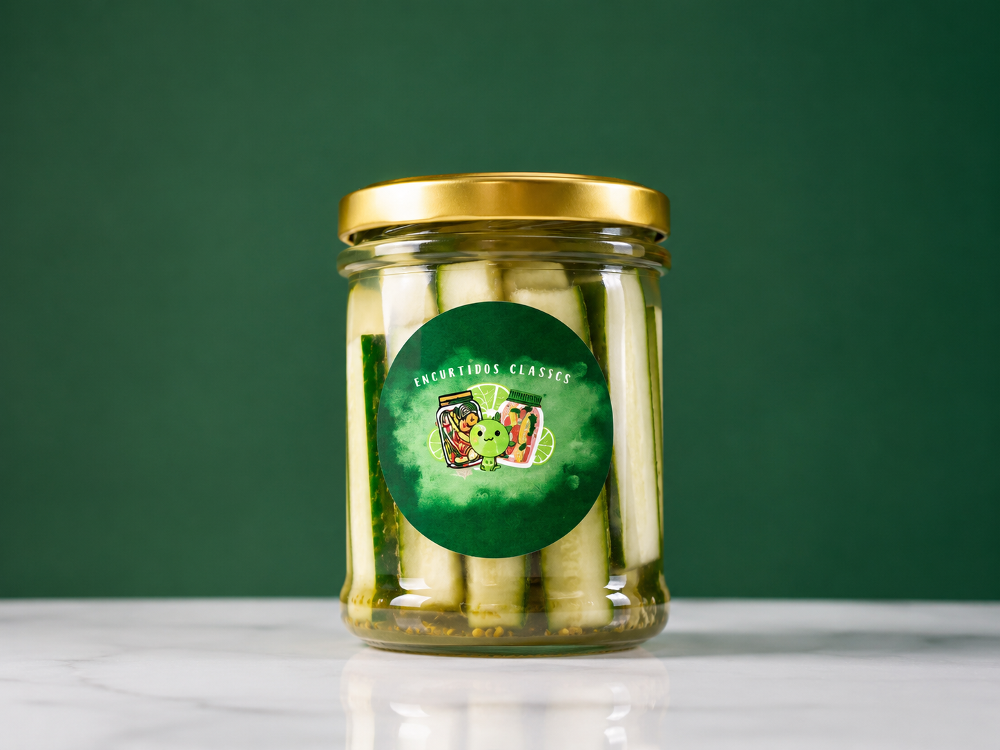
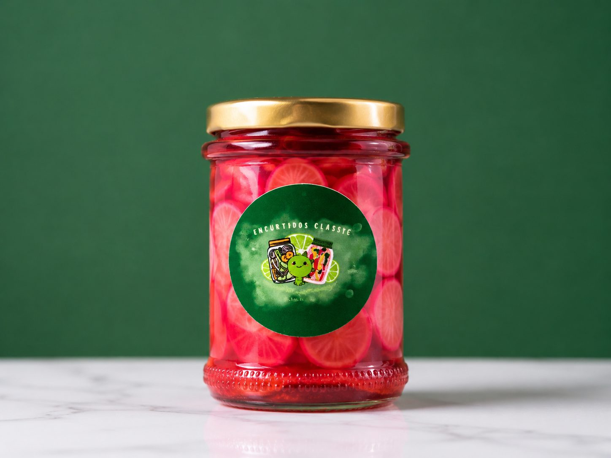

Una marca apasionada por ofrecer productos naturales con el auténtico sabor casero.
Utilizamos vegetales cuidadosamente seleccionados para garantizar calidad y frescura.
Cada frasco es preparado siguiendo recetas tradicionales que conservan el verdadero sabor casero.
Sin conservantes industriales y con procesos que mantienen la textura y el sabor natural.
Todo gran proyecto comienza con una idea y mucha pasión.
Encurtidos Classic's nació con el propósito de compartir el auténtico sabor de los encurtidos artesanales elaborados con ingredientes frescos y recetas tradicionales. Desde el inicio, nuestro objetivo ha sido ofrecer un producto de calidad que combine tradición, frescura y practicidad, permitiendo que cualquier persona disfrute de un alimento natural en sus comidas, reuniones o como un complemento delicioso para diferentes recetas.
Lo que comenzó como una preparación casera para familiares y amigos, poco a poco se convirtió en un emprendimiento dedicado a ofrecer productos de alta calidad, conservando siempre el sabor natural y el cariño en cada frasco.
A diferencia de muchas marcas del mercado nacional, nuestros productos no contienen aditivos ni conservantes industriales, ya que utilizamos métodos de conservación naturales mediante limón y vinagre, cuyos ácidos ayudan a mantener los nutrientes, aportar propiedades antioxidantes y favorecer la salud digestiva.
Hoy seguimos trabajando con el mismo compromiso: llevar a cada hogar un producto fresco, artesanal y perfecto para acompañar cualquier comida.
Elaborados con ingredientes naturales, perfectos para acompañar hamburguesas, hot dogs, ensaladas y mucho más.

Crujiente, fresco y con el equilibrio perfecto entre acidez y sabor.
$3.00
Una opción diferente, deliciosa y perfecta para cualquier comida.
$3.00| Producto | Presentación | Precio |
|---|---|---|
| Pepino | 110 g | $3.00 |
| Rábano | 110 g | $3.00 |
Nos esforzamos por ofrecer un producto de calidad, elaborado con ingredientes naturales y mucho cuidado.
Utilizamos vegetales frescos y seleccionados para conservar su sabor y textura.
Perfectos para hamburguesas, hot dogs, ensaladas, carnes y muchas recetas más.
Elaborados con recetas tradicionales que mantienen el auténtico sabor artesanal.
Cada frasco pasa por un proceso cuidadoso para ofrecer la mejor experiencia.
Resolvemos las dudas más comunes de nuestros clientes.
Sí. Nuestros productos son elaborados con ingredientes frescos y sin conservantes industriales.
Actualmente contamos con frascos de 110 gramos.
Sí, realizamos entregas según la ubicación del cliente.
Puedes escribirnos directamente por Instagram.
Síguenos en nuestras redes sociales para descubrir nuevos productos, promociones y recetas.
Guayaquil, Ecuador
Lunes a Sábado
08:00 - 18:00